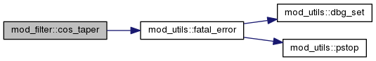
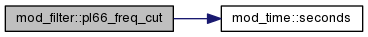
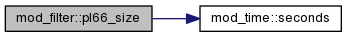
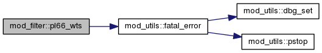

mod_filter Module Reference
Functions/Subroutines | |
| integer function | pl66_size (HAP, DT) |
| real(dp) function | pl66_freq_cut (HAP, DT) |
| subroutine | pl66_wts (WTS, NSIZE, FREQ_CUT) |
| subroutine | cos_taper (CS, NSIZE, C_TAP) |
Function/Subroutine Documentation
| subroutine mod_filter::cos_taper | ( | real(sp), dimension(nsize), intent(out) | CS, |
| integer, intent(in) | NSIZE, | ||
| real(sp), intent(in) | C_TAP | ||
| ) |
Here is the call graph for this function:

| real(dp) function mod_filter::pl66_freq_cut | ( | type(time), intent(in) | HAP, |
| type(time), intent(in) | DT | ||
| ) |
Here is the call graph for this function:

| integer function mod_filter::pl66_size | ( | type(time), intent(in) | HAP, |
| type(time), intent(in) | DT | ||
| ) |
Here is the call graph for this function:

| subroutine mod_filter::pl66_wts | ( | real(sp), dimension(nsize), intent(out) | WTS, |
| integer, intent(in) | NSIZE, | ||
| real(sp), intent(in) | FREQ_CUT | ||
| ) |
Here is the call graph for this function:
